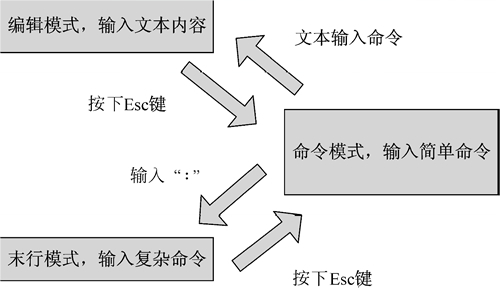

首页 > 编程笔记
vi工作模式（3种）以及模式切换（转换）
vi 编辑器是一个功能强大的编辑器。学习 vi 要从其基本工作模式开始学起。了解这些工作模式对用户理解 vi 编辑器的行为是不无裨益的。
对于一些从图形界面中转入 vi 的开发者来说，了解 vi 的工作模式十分重要。本节将深入讨论 vi 编辑器的工作模式。
vi 编辑器有 3 种基本工作模式，分别是命令模式、文本输入模式和末行模式。下面详 细介绍这 3 种模式。
在命令模式下，用户可以输入 vi 命令，用于管理自己的文档。此时从键盘上输入的任何字符都被当做编辑命令来解释。若输入的字符是合法的 vi 命令，则 vi 在接受用户命令之后完成相应的动作。
但需注意的是，所输入的命令并不回显在屏幕上。若输入的字符不是 vi 的合法命令，vi 会响铃报警。
在该模式下，用户输入的任何字符都被 vi 当做文件内容保存起来，并将其显示在屏幕上。在文本输入过程中，若想回到命令模式下，按下
在命令模式下，用户按
末行命令执行完后，vi 自动回到命令模式。
如果需要从文本模式返回，则按下
在命令模式下输入
vi 编辑器的 3 种模式的转换如下图所示。
对于一些从图形界面中转入 vi 的开发者来说，了解 vi 的工作模式十分重要。本节将深入讨论 vi 编辑器的工作模式。
vi 编辑器有 3 种基本工作模式，分别是命令模式、文本输入模式和末行模式。下面详 细介绍这 3 种模式。
1) 命令行模式
该模式是进入 vi 编辑器后的默认模式。任何时候，不管用户处于何种模式，按下Esc键即可进入命令模式。在命令模式下，用户可以输入 vi 命令，用于管理自己的文档。此时从键盘上输入的任何字符都被当做编辑命令来解释。若输入的字符是合法的 vi 命令，则 vi 在接受用户命令之后完成相应的动作。
但需注意的是，所输入的命令并不回显在屏幕上。若输入的字符不是 vi 的合法命令，vi 会响铃报警。
2) 文本输入模式
在命令模式下输入插入命令i、附加命令a、打开命令o、修改命令c、取代命令r或替换命令s都可以进入文本输入模式。在该模式下，用户输入的任何字符都被 vi 当做文件内容保存起来，并将其显示在屏幕上。在文本输入过程中，若想回到命令模式下，按下
Esc键即可。
3) 末行模式
末行模式也称 ex 转义模式。在命令模式下，用户按
:键即可进入末行模式下，此时 vi 会在显示窗口的最后一行（通常也是屏幕的最后一行）显示一个:作为末行模式的说明符，等待用户输入命令。多数文件管理命令都是在此模式下执行的（如把编辑缓冲区的内容写到文件中等）。末行命令执行完后，vi 自动回到命令模式。
vi 工作模式之间的切换
如果要从命令模式转换到编辑模式，可以输入命令a或者i。如果需要从文本模式返回，则按下
Esc键即可。在命令模式下输入
:即可切换到末行模式，然后输入命令。vi 编辑器的 3 种模式的转换如下图所示。

图：vi 三种工作模式的切换
图：vi 三种工作模式的切换
关注公众号「站长严长生」，在手机上阅读所有教程，随时随地都能学习。内含一款搜索神器，免费下载全网书籍和视频。

微信扫码关注公众号